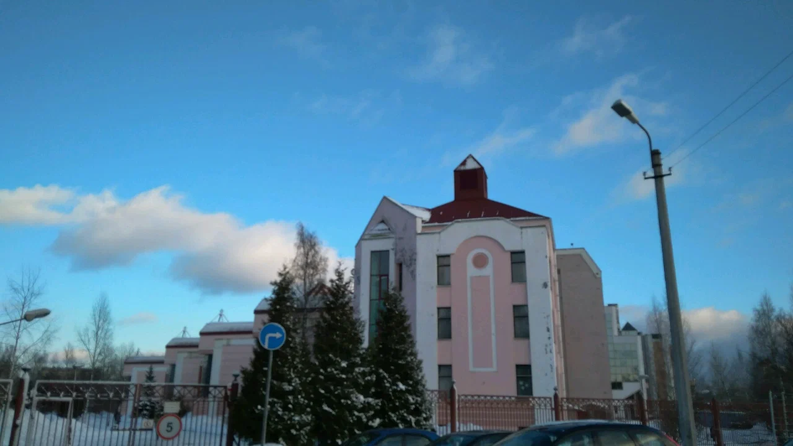

Кто же такой Козлов Дмитрий?
И с чем его едят?
Не надо...
Давайте знакомиться!
Кто и откуда взялся?
Меня зовут Козлов Дмитрий, мне 20 полных лет. Я козерог,
родился в год козы и ношу соответствующую
фамилию.
Я уроженец Питера, но давно переехал в Калининград. Поэтому мой путь в
Питере начался с красивого розового здания интерната при ФТШ. Я должен
был узнать, куда я смогу приложить математику. Поняв, что я ни физик,
ни программист, я выбрал ИТМО, чтобы жизнь мёдом не казалась.

Пристройка к лицею ФТШ, такой вот маленький интернат.
Чем занимаешься по жизни?
Я много где себя пробовал, от Android разработки до спортивного
ориентирования. Но учёба умеет заставлять расставлять приоритеты.
Осталось последнее увлечение - The
CTF. Из названия всё сразу
становится не понятно...
CTF - это соревнования для
тех, кто проснулся утром или в обед и решил, что он хакер, или для
тех, кто очень любит копаться в логах.
Зато из-за необычной специфики заданий в таких соревнованиях, кажется,
что я слишком много раз видел Hello world! на разных
языках.
Интересные факты обо мне
Мой любимый цвет - красный
Моя любимая цитата гениального человека:
Залить бензин в дизельный двигатель, конечно, можно, но в
перспективе это не перспективно
(c) Козлов Дмитрий
Использовал картинки из символов только один раз на предмете Операционные системы
и здесь:
／＞ フ
| _ _|
／`ミ _x 彡
/ |
/ ヽ ﾉ
／￣| | | |
| (￣ヽ＿_ヽ_)_)
＼二つ
По жизни 3 группы людей, не сговариваясь, стали называть меня
дед... А воспитатели сказали, что я
самый взрослыйи ответственный.